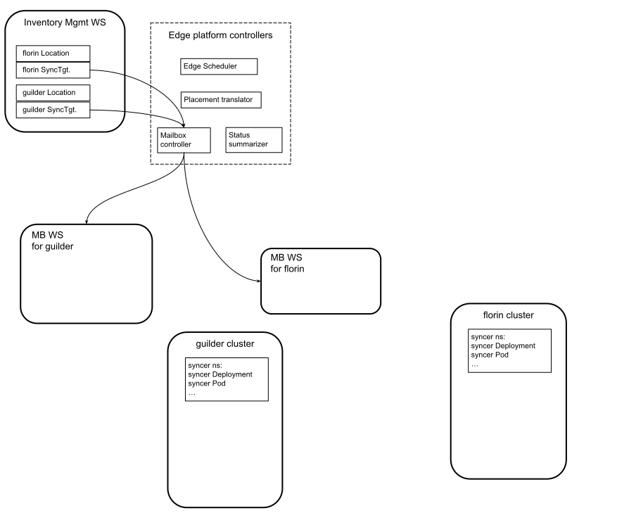

KubeStellar Placement Translator
The placement translator runs in the center and translates EMC placement problems into edge sync problems.
Status
The placement translator is a work in progress. It maintains
SyncerConfig objects and downsynced objects in mailbox workspaces,
albeit with limitations discussed in the next section.
Additional Design Details
The placement translator maintains one SyncerConfig object in each
mailbox workspace. That object is named the-one. Other
SyncerConfig objects may exist; the placement translator ignores
them.
The placement translator responds to each resource discovery
independently. This makes the behavior jaggy and the logging noisy.
For example, it means that the SyncerConfig objects may be rewritten
for each resource discovery. But eventually the right things happen.
The placement translator does not yet attempt the full prescribed technique for picking the API version to use when reading and writing. Currently it looks only at the preferred version reported in each workload management workspace, and only succeeds if they all agree.
One detail left vague in the design outline is what constitutes the "desired state" that propagates from center to edge. The easy obvious answer is the "spec" section of downsynced objects, but that answer ignores some issues. Following is the current full answer.
When creating a workload object in a mailbox workspace, the placement translator uses a copy of the object read from the workload management workspace but with the following changes.
- The
metadata.managedFieldsis emptied. - The
metadata.resourceVersionis emptied. - The
metadata.selfLlinkis emptied. - The
metadata.uidis emptied. - The
metadata.ownerReferencesis emptied. (Doing better would require tracking UID mappings from WMW to MBWS.) - In
metadata.labels,edge.kcp.io/projected=yesis added.
The placement translator does not react to changes to the workload objects in the mailbox workspace.
When downsyncing desired state and the placement translator finds the
object already exists in the mailbox workspace, the placement
translator does an HTTP PUT (Update in the
k8s.io/client-go/dynamic package) using an object value --- called
below the "destination" object --- constructed by reading the object
from the MBWS and making the following changes.
- For top-level sections in the source object other than
apiVersion,kind,metadata, andstatus, the destination object gets the same contents for that section. - If the source object has some annotations then they are merged into the destination object annotations as follows.
- A destination annotation that has no corresponding annotation in the source is unchanged.
- A destination annotation that has the same value as the corresponding annotation in the source is unchanged.
- A "system" annotation is unchanged. The system annotations are
those whose key (a) starts with
kcp.io/or other stuff followed by.kcp.io/and (b) does not start withedge.kcp.io/. - The source object's labels are merged into the destination object
using the same rules as for annotations, and
edge.kcp.io/projectedis set toyes. - The remainder of the
metadatais unchanged.
For objects --- other than Namespace objects --- that exist in a
mailbox workspace and whose API GroupResource has been relevant to the
placement translator since it started, ones that have the
edge.kcp.io/projected=yes label but are not currently desired are
deleted. The exclusion for Namespace objects is there because the
placement translator does not take full ownership of them, rather it
takes the position that there might be other parties that create
Namespace objects or rely on their existence.
Usage
The placement translator needs three kube client configurations. One
points to the edge service provider workspace and provides authority
to write into the mailbox workspaces. Another points to the kcp
server base (i.e., does not identify a particular logical cluster nor
*) and is authorized to read all clusters. In the kubeconfig
created by kcp start that is satisfied by the context named
system:admin. The third points to the "scheduling service provider
workspace", the one that has the APIExport of scheduling.kcp.io.
This is normally root, which has all the kcp APIExports, and the
context named root in the kubeconfig created by kcp start
satisfies this.
The command line flags, beyond the basics, are as follows. For a
string parameter, if no default is explicitly stated then the default
is the empty string, which usually means "not specified here". For
both kube client configurations, the usual rules apply: first consider
command line parameters, then $KUBECONFIG, then ~/.kube/config.
--allclusters-cluster string The name of the kubeconfig cluster to use for access to all clusters
--allclusters-context string The name of the kubeconfig context to use for access to all clusters (default "system:admin")
--allclusters-kubeconfig string Path to the kubeconfig file to use for access to all clusters
--allclusters-user string The name of the kubeconfig user to use for access to all clusters
--espw-cluster string The name of the kubeconfig cluster to use for access to the edge service provider workspace
--espw-context string The name of the kubeconfig context to use for access to the edge service provider workspace
--espw-kubeconfig string Path to the kubeconfig file to use for access to the edge service provider workspace
--espw-user string The name of the kubeconfig user to use for access to the edge service provider workspace
--server-bind-address ipport The IP address with port at which to serve /metrics and /debug/pprof/ (default :10204)
--sspw-cluster string The name of the kubeconfig cluster to use for access to the scheduling service provider workspace
--sspw-context string The name of the kubeconfig context to use for access to the scheduling service provider workspace (default "root")
--sspw-kubeconfig string Path to the kubeconfig file to use for access to the scheduling service provider workspace
--sspw-user string The name of the kubeconfig user to use for access to the scheduling service provider workspace
Try It
The nascent placement translator can be exercised following the scenario in example1. You will need to run the scheduler and mailbox controller long enough for them to create what this scenario calls for, but they can be terminated after that.

Stage 1 creates the infrastructure and the edge service provider workspace and lets that react to the inventory. Then the edge syncers are deployed, in the edge clusters and configured to work with the corresponding mailbox workspaces. This stage has the following steps.
Create two kind clusters.
This example uses two kind clusters as edge clusters. We will call them "florin" and "guilder".
This example uses extremely simple workloads, which
use hostPort networking in Kubernetes. To make those ports easily
reachable from your host, this example uses an explicit kind
configuration for each edge cluster.
For the florin cluster, which will get only one workload, create a
file named florin-config.yaml with the following contents. In a
kind config file, containerPort is about the container that is
also a host (a Kubernetes node), while the hostPort is about the
host that hosts that container.
cat > florin-config.yaml << EOF
kind: Cluster
apiVersion: kind.x-k8s.io/v1alpha4
nodes:
- role: control-plane
extraPortMappings:
- containerPort: 8081
hostPort: 8094
EOF
For the guilder cluster, which will get two workloads, create a file
named guilder-config.yaml with the following contents. The workload
that uses hostPort 8081 goes in both clusters, while the workload that
uses hostPort 8082 goes only in the guilder cluster.
cat > guilder-config.yaml << EOF
kind: Cluster
apiVersion: kind.x-k8s.io/v1alpha4
nodes:
- role: control-plane
extraPortMappings:
- containerPort: 8081
hostPort: 8096
- containerPort: 8082
hostPort: 8097
EOF
Finally, create the two clusters with the following two commands,
paying attention to $KUBECONFIG and, if that's empty,
~/.kube/config: kind create will inject/replace the relevant
"context" in your active kubeconfig.
kind create cluster --name florin --config florin-config.yaml
kind create cluster --name guilder --config guilder-config.yaml
Start kcp
Download and build or install kcp, according to your preference.
In some shell that will be used only for this purpose, issue the kcp
start command. If you have junk from previous runs laying around,
you should probably rm -rf .kcp first.
In the shell commands in all the following steps it is assumed that
kcp is running and $KUBECONFIG is set to the
.kcp/admin.kubeconfig that kcp produces, except where explicitly
noted that the florin or guilder cluster is being accessed.
It is also assumed that you have the usual kcp kubectl plugins on your
$PATH.
clone the v0.11.0 branch kcp source:
build the kubectl-ws binary and include it in$PATH
run kcp (kcp will spit out tons of information and stay running in this terminal window)
When you get to the step of "Populate the edge service provider workspace", it suffices to do the following.
kubectl ws root
kubectl ws create espw --enter
kubectl ws root:espw
kubectl create -f ../KubeStellar/config/exports/
Continue to follow the steps until the start of Stage 3 of the exercise.
Next make sure you run kubectl ws root:espw to enter the edge
service provider workspace, then you will be ready to run the edge
controllers.
First run the mailbox controller, long for it to create the mailbox
workspaces; it does not need to keep running, you can ^C it. This
should not take long, and do not expect an explicit acknowledgement on
the console. You can check for their existence by doing kubectl get
workspaces while in the ESPW.
Next run the scheduler, long enough for it to create the SinglePlacementSlice objects. Again, this should not take long, and you can ^C the scheduler once it has created those objects.
Finally run the placement translator from the command line. That should look like the following (possibly including some complaints, which do not necessarily indicate real problems because the subsequent success is not logged so profligately).
kubectl ws root:espw
cd ../KubeStellar
go run ./cmd/placement-translator &
sleep 15 # wait a few seconds for the placement translator to initialize
I0412 15:15:57.867837 94634 shared_informer.go:282] Waiting for caches to sync for placement-translator
I0412 15:15:57.969533 94634 shared_informer.go:289] Caches are synced for placement-translator
I0412 15:15:57.970003 94634 shared_informer.go:282] Waiting for caches to sync for what-resolver
I0412 15:15:57.970014 94634 shared_informer.go:289] Caches are synced for what-resolver
I0412 15:15:57.970178 94634 shared_informer.go:282] Waiting for caches to sync for where-resolver
I0412 15:15:57.970192 94634 shared_informer.go:289] Caches are synced for where-resolver
...
I0412 15:15:57.972185 94634 map-types.go:338] "Put" map="where" key="r0bdh9oumjkoag3s:edge-placement-s" val="[&{SinglePlacementSlice edge.kcp.io/v1alpha1} {edge-placement-s e1b1033d-49f2-45e8-8a90-6d0295b644b6 1184 1 2023-04-12 14:39:21 -0400 EDT <nil> <nil> map[] map[kcp.io/cluster:r0bdh9oumjkoag3s] [{edge.kcp.io/v1alpha1 EdgePlacement edge-placement-s 0e718a31-db21-47f1-b789-cd55835b1418 <nil> <nil>}] [] [{scheduler Update edge.kcp.io/v1alpha1 2023-04-12 14:39:21 -0400 EDT FieldsV1 {\"f:destinations\":{},\"f:metadata\":{\"f:ownerReferences\":{\".\":{},\"k:{\\\"uid\\\":\\\"0e718a31-db21-47f1-b789-cd55835b1418\\\"}\":{}}}} }]} [{1xpg93182scl85te location-g sync-target-g 5ee1c42e-a7d5-4363-ba10-2f13fe578e19}]}]"
I0412 15:15:57.973740 94634 map-types.go:338] "Put" map="where" key="1i1weo8uoea04wxr:edge-placement-c" val="[&{SinglePlacementSlice edge.kcp.io/v1alpha1} {edge-placement-c c446ca9b-8937-4751-89ab-058bcfb079c1 1183 3 2023-04-12 14:39:21 -0400 EDT <nil> <nil> map[] map[kcp.io/cluster:1i1weo8uoea04wxr] [{edge.kcp.io/v1alpha1 EdgePlacement edge-placement-c c1e038b9-8bd8-4d22-8ab8-916e40c794d1 <nil> <nil>}] [] [{scheduler Update edge.kcp.io/v1alpha1 2023-04-12 14:39:21 -0400 EDT FieldsV1 {\"f:destinations\":{},\"f:metadata\":{\"f:ownerReferences\":{\".\":{},\"k:{\\\"uid\\\":\\\"c1e038b9-8bd8-4d22-8ab8-916e40c794d1\\\"}\":{}}}} }]} [{1xpg93182scl85te location-f sync-target-f e6efb8bd-6755-45ac-b44d-5d38f978f990} {1xpg93182scl85te location-g sync-target-g 5ee1c42e-a7d5-4363-ba10-2f13fe578e19}]}]"
...
I0412 15:15:58.173974 94634 map-types.go:338] "Put" map="what" key="1i1weo8uoea04wxr:edge-placement-c" val={Downsync:map[{APIGroup: Resource:namespaces Name:commonstuff}:{APIVersion:v1 IncludeNamespaceObject:false}] Upsync:[{APIGroup:group1.test Resources:[sprockets flanges] Namespaces:[orbital] Names:[george cosmo]} {APIGroup:group2.test Resources:[cogs] Namespaces:[] Names:[William]}]}
I0412 15:15:58.180380 94634 map-types.go:338] "Put" map="what" key="r0bdh9oumjkoag3s:edge-placement-s" val={Downsync:map[{APIGroup: Resource:namespaces Name:specialstuff}:{APIVersion:v1 IncludeNamespaceObject:false}] Upsync:[{APIGroup:group1.test Resources:[sprockets flanges] Namespaces:[orbital] Names:[george cosmo]} {APIGroup:group3.test Resources:[widgets] Namespaces:[] Names:[*]}]}
...
The "Put" log entries with map="what" show what the "what resolver" is
reporting. This reports mappings from ExternalName of an
EdgePlacement object to the workload parts that that EdgePlacement
says to downsync and upsync.
The "Put" log entries with map="where" show the
SinglePlacementSlice objects associated with each EdgePlacement.
Next, using a separate shell, examine the SyncerConfig objects in the mailbox workspaces. Make sure to use the same kubeconfig as you use to run the placement translator, or any other that is pointed at the edge service provider workspace. The following with switch the focus to mailbox workspace(s).
You can get a listing of mailbox workspaces, while in the edge service provider workspace, as follows.
NAME TYPE REGION PHASE URL AGE
1xpg93182scl85te-mb-5ee1c42e-a7d5-4363-ba10-2f13fe578e19 universal Ready https://192.168.58.123:6443/clusters/12zzf3frkqz2yj39 36m
1xpg93182scl85te-mb-e6efb8bd-6755-45ac-b44d-5d38f978f990 universal Ready https://192.168.58.123:6443/clusters/2v6wl3x41zxmpmhr 36m
Next switch to one of the mailbox workspaces (in my case I picked the
one for the guilder cluster) and examine the SyncerConfig object.
That should look like the following.
Current workspace is "root:espw:1xpg93182scl85te-mb-5ee1c42e-a7d5-4363-ba10-2f13fe578e19" (type root:universal).
apiVersion: edge.kcp.io/v1alpha1
kind: SyncerConfig
metadata:
annotations:
kcp.io/cluster: 12zzf3frkqz2yj39
creationTimestamp: "2023-04-12T19:15:58Z"
generation: 2
name: the-one
resourceVersion: "1249"
uid: 00bf8d10-393a-4d94-b032-79fae30646f6
spec:
namespaceScope:
namespaces:
- commonstuff
- specialstuff
resources:
- apiVersion: v1
group: ""
resource: limitranges
- apiVersion: v1
group: coordination.k8s.io
resource: leases
- apiVersion: v1
group: ""
resource: resourcequotas
- apiVersion: v1
group: ""
resource: configmaps
- apiVersion: v1
group: networking.k8s.io
resource: ingresses
- apiVersion: v1
group: events.k8s.io
resource: events
- apiVersion: v1
group: apps
resource: deployments
- apiVersion: v1
group: ""
resource: events
- apiVersion: v1
group: ""
resource: secrets
- apiVersion: v1
group: ""
resource: services
- apiVersion: v1
group: ""
resource: pods
- apiVersion: v1
group: ""
resource: serviceaccounts
- apiVersion: v1
group: rbac.authorization.k8s.io
resource: rolebindings
- apiVersion: v1
group: rbac.authorization.k8s.io
resource: roles
upsync:
- apiGroup: group2.test
names:
- William
resources:
- cogs
- apiGroup: group3.test
names:
- '*'
resources:
- widgets
- apiGroup: group1.test
names:
- george
- cosmo
namespaces:
- orbital
resources:
- sprockets
- flanges
status: {}
At this point you might veer off from the example scenario and try tweaking things. For example, try deleting an EdgePlacement as follows.
That will cause the placement translator to log updates, as follows.
I0412 15:20:43.129842 94634 map-types.go:338] "Put" map="what" key="1i1weo8uoea04wxr:edge-placement-c" val={Downsync:map[] Upsync:[]}
I0412 15:20:43.241674 94634 map-types.go:342] "Delete" map="where" key="1i1weo8uoea04wxr:edge-placement-c"
After that, the SyncerConfig in the florin mailbox should be empty, as in the following (you mailbox workspace names may be different).
Current workspace is "root:espw:2lplrryirmv4xug3-mb-89c08764-01ae-4117-8fb0-6b752e76bc2f" (type root:universal).
apiVersion: edge.kcp.io/v1alpha1
kind: SyncerConfig
metadata:
annotations:
kcp.io/cluster: 2cow9p3xogak4n0u
creationTimestamp: "2023-04-11T04:34:22Z"
generation: 4
name: the-one
resourceVersion: "2130"
uid: 2b66b4bc-4130-4bf0-8524-73d6885f2ad8
spec:
namespaceScope: {}
status: {}
And the SyncerConfig in the guilder mailbox workspace should reflect only the special workload. That would look something like the following.
Current workspace is "root:espw:1xpg93182scl85te-mb-5ee1c42e-a7d5-4363-ba10-2f13fe578e19" (type root:universal).
apiVersion: edge.kcp.io/v1alpha1
kind: SyncerConfig
metadata:
annotations:
kcp.io/cluster: 12zzf3frkqz2yj39
creationTimestamp: "2023-04-12T19:15:58Z"
generation: 3
name: the-one
resourceVersion: "1254"
uid: 00bf8d10-393a-4d94-b032-79fae30646f6
spec:
namespaceScope:
namespaces:
- specialstuff
resources:
- apiVersion: v1
group: ""
resource: pods
- apiVersion: v1
group: ""
resource: events
- apiVersion: v1
group: ""
resource: limitranges
- apiVersion: v1
group: ""
resource: services
- apiVersion: v1
group: ""
resource: configmaps
- apiVersion: v1
group: apps
resource: deployments
- apiVersion: v1
group: ""
resource: serviceaccounts
- apiVersion: v1
group: ""
resource: secrets
- apiVersion: v1
group: rbac.authorization.k8s.io
resource: roles
- apiVersion: v1
group: ""
resource: resourcequotas
- apiVersion: v1
group: events.k8s.io
resource: events
- apiVersion: v1
group: networking.k8s.io
resource: ingresses
- apiVersion: v1
group: coordination.k8s.io
resource: leases
- apiVersion: v1
group: rbac.authorization.k8s.io
resource: rolebindings
upsync:
- apiGroup: group3.test
names:
- '*'
resources:
- widgets
- apiGroup: group1.test
names:
- george
- cosmo
namespaces:
- orbital
resources:
- sprockets
- flanges
status: {}